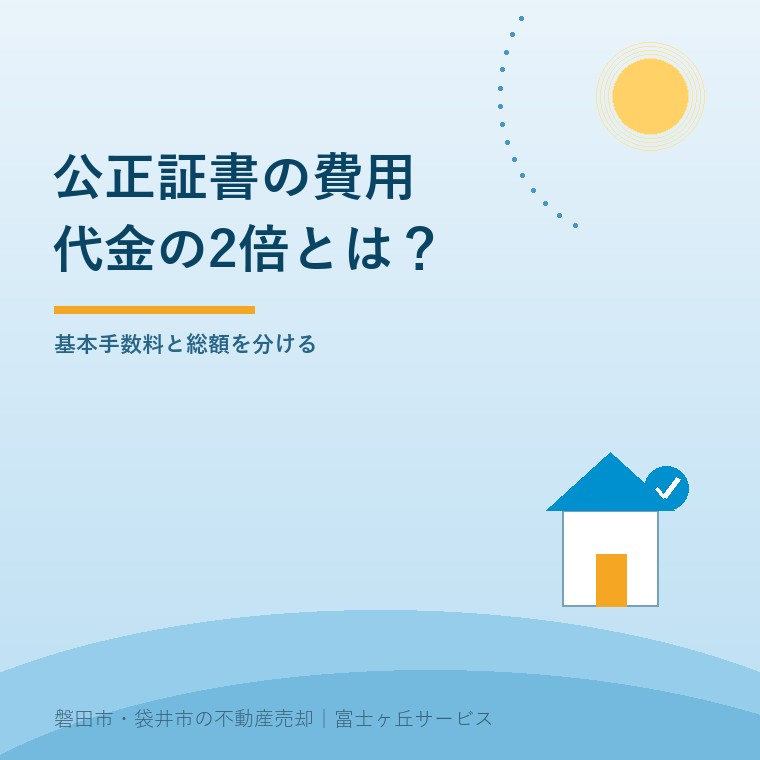
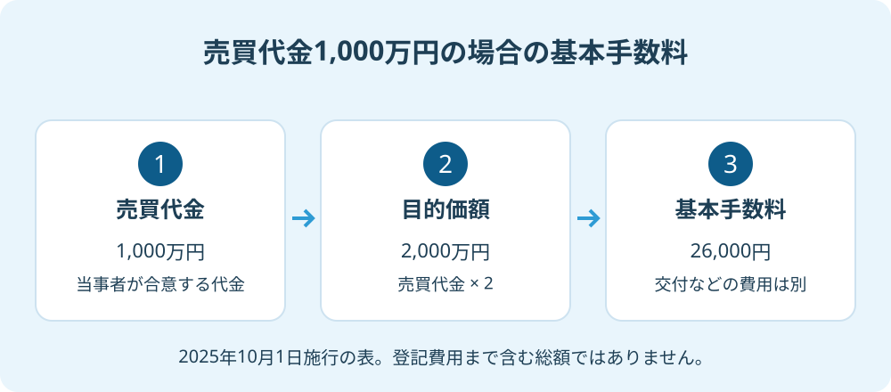

不動産売買の公正証書費用｜代金の2倍で計算
2026年9月27日｜カテゴリ：不動産売買・契約費用

この記事の要点
Q. 1,000万円で実家を売る契約を公正証書にすると、費用はいくらですか？
売買代金1,000万円なら、目的価額は2倍の2,000万円、基本手数料は26,000円です。2025年10月1日施行の表による計算で、交付などの追加費用や登記費用は別に確認します。契約案を公証役場へ示して総額を見積もってください。磐田市・袋井市・森町では、富士ヶ丘サービスのような地域密着の会社に相談する選択肢もあります。
大石浩之（磐田市／不動産業）です。親族間で実家を売買するとき、「公正証書にしておこう」という案が出ることがあります。その判断をする前に、何を確実にしたいのかと、いくら支払うのかを分けます。公正証書という名前だけで、売買の不安が全部消えるわけではありません。
代金の2倍は、支払う手数料ではなく目的価額
不動産売買を公正証書にする場合、通常の算定例では売買代金の2倍を「目的価額」とします。目的価額は手数料表のどの区分を使うか決める計算上の金額です。日本橋公証役場が掲載する2025年10月1日からの手数料表と、日本公証人連合会「12 手数料」で、2026年9月27日に確認しました。
売買は、売主が不動産を渡し、買主が代金を払うという、双方に義務がある契約です。これを双務契約と呼びます。日本公証人連合会は、双方が負担する価額を合算する仕組みを説明しています。通常の売買では、その計算を売買代金の2倍として扱います。
例えば、売買代金が1,000万円なら目的価額は2,000万円です。公証役場へ2,000万円を払うという話ではありません。また、売主と買主へそれぞれ同額の基本手数料を請求する、という意味でもありません。倍にする段階と、表に当てはめる段階を分ければ、計算の位置を見失わずに済みます。
私は、家族へ説明するときは、電卓に入れる数字の横へ「売買代金」「目的価額」「基本手数料」と名前を付けることを勧めます。同じ紙に登記費用も載せると、別の計算で使う評価額と混ざりやすいからです。固定資産税の通知書にある金額を、無条件にこの代金の欄へ写しません。
1,000万円の売買なら、基本手数料は26,000円
2025年10月1日施行の手数料表では、目的価額が1,000万円を超え3,000万円以下の場合、基本手数料は26,000円です。売買代金が1,000万円の例なら、目的価額2,000万円がこの区分に入ります。以下は単純な売買契約だけを想定した計算例です。
| 仮の売買代金 | 2倍にした目的価額 | 基本手数料 |
|---|---|---|
| 500万円 | 1,000万円 | 20,000円 |
| 1,000万円 | 2,000万円 | 26,000円 |
| 1,500万円 | 3,000万円 | 26,000円 |
| 2,000万円 | 4,000万円 | 33,000円 |
表の「超え」「以下」を省かないでください。目的価額がちょうど1,000万円の場合は20,000円の区分で、1,000万円を超える区分ではありません。目的価額がちょうど3,000万円の場合は26,000円です。売買代金ではなく、2倍にした後の数字を表に当てます。
基本手数料は、代金に一定の率を掛け続ける計算ではありません。例の1,000万円と1,500万円の売買では、基本手数料が同じ区分になります。私はこの違いを、家族の費用表で先に示したいと考えます。代金が増えたら公証人への支払いも同じ割合で増える、と予算を作らないためです。
ただし、この表は最終見積りではありません。売買以外の法律行為を同じ証書に記載する場合などは、内容に応じた計算が必要です。日本公証人連合会も、複数の法律行為を含む証書では、行為ごとの算定や主従関係の扱いがあると説明しています。契約の名称だけを伝えず、条件案を見せて確認します。

公正証書にする目的を、料金表より先に決める
公正証書を選ぶかどうかは、契約のどの約束を明確にしたいのかから考えます。日本公証人連合会「1 公正証書」は、公証人が作成する公文書としての性質と証明力を説明しています。単に立派な書類を一枚増やす、という目的ではありません。
私は、公正証書の良い点は、当事者の約束を法律の専門家である公証人と整理し、後から内容を確かめる資料を残せることだと考えます。例えば代金を分けて払う案なら、総額、支払日、未払いへの対応を曖昧にしない相談ができます。親族だから言い出しにくい条件ほど、言葉にして確認する機会になります。
金銭支払いの公正証書では、一定額の支払いの合意と、支払わない場合に直ちに強制執行を受ける旨の記載など、要件を備えると裁判手続を経ずに強制執行ができる、と日本公証人連合会は説明しています。書類に公正証書という名前があれば、すべての約束を同じ方法で実現できるわけではありません。
その上で私が注文したいのは、「公正証書なら安心」の一言で、不動産そのものの確認を終わらせないことです。道路、境界、名義、残置物、引渡し条件は、別に資料と現地を確かめます。証書作成の手数料を払っても、境界の確認や荷物の片付けまで実行されたことにはなりません。
公正証書を作るべきかは、私も契約案を見ずには決められません。代金を一括で払い同時に引き渡す案と、支払いが長期にわたる案では、心配している点が違うからです。親族間売買で確認する価格と契約を整理したうえで、公証人へ何を備えたいかを伝えます。
基本手数料と、家族の支払総額を分ける
不動産売買の公正証書費用を見積もるときは、目的価額による基本手数料と、証書の枚数や交付などによる費用を分けます。日本橋公証役場の手数料表には、基本手数料のほか、枚数による加算、交付、役場外での執務などに関する項目も載っています。
手数料表の一行を、家族の支払総額にしてはいけない。私はこう考えます。26,000円という数字だけを家族へ伝えると、後で別の費用が出たときに「聞いていた話と違う」になります。安く見せるより、確定していない欄を未確認として残す方が、売主の予算を守れます。
| 費用の区分 | 見積りで確かめること |
|---|---|
| 公正証書の基本手数料 | 売買代金、目的価額、証書に含める法律行為 |
| 加算・交付等 | 枚数、交付方法、必要な通数、出張の有無 |
| 別に依頼する業務 | 契約案の相談や登記などの依頼範囲と報酬 |
| 税金・実費 | 作成する文書の印紙税、登記の登録免許税など |
表のすべてが、どの取引でも同額で発生するわけではありません。見積書には、公証役場へ払うもの、ほかの専門家へ払うもの、税金や実費を別の行で書いてもらいます。売主負担か買主負担かも、手数料表だけでは決まりません。立替払いをする人と最終的に負担する人が違うなら、精算方法を残します。
印紙税も、公正証書の基本手数料とは別の確認です。紙で残す文書の内容や形式を示し、印紙税と電子契約の整理と合わせて確認します。ここでは印紙税額を一律に加算しません。課税文書に当たるかを含む税務の個別判断は、税理士などの専門家に確認を。
所有権移転登記も、証書を作る作業とは別です。公正証書が完成した日と、売買代金を支払う日、鍵を渡す日、登記を申請する日を並べます。決済当日のお金と手続きを確認し、日程の間に誰の責任で何をするかを決めておきます。登記の個別判断は司法書士に確認を。
磐田・袋井の親族間売買は、条件案を一枚にする
磐田市や袋井市の実家について公正証書の相談をするなら、所在地、当事者、代金、支払方法、引渡し予定、公正証書にしたい理由を一枚に整理します。公証人へ渡す前の相談メモであり、これだけで必要書類が全部そろうという意味ではありません。
例えば、施設へ入った親の家を子が買う案でも、家族の関係と契約の条件を分けて書きます。誰が家を所有し、誰が代金を受け取るのかを先に確認します。親族間で合意した価格の税務上の扱い、本人の意思確認、代理の可否は、手数料の計算ができたことでは解決しません。税務・相続・代理の個別判断は専門家に確認を。
私なら相談メモに「合意済み」「未合意」「専門家へ確認」の三つの欄を作ります。家族の希望を既定の約束として公証人へ渡さないためです。買主が分割払いを希望していても、売主が同意していなければ未合意の欄です。費用負担も同じように扱います。
富士ヶ丘サービスは、介護施設の運営を背景に、介護と不動産を一体で相談できる窓口を設けています。磐田・袋井の物件条件と家族の予定を整理し、必要な専門家へつなぐことが、家族が困らない売却の準備です。公正証書の採用を先に決めるのではなく、困っている約束を明確にするところから始めます。
- 売買代金の2倍を計算し、目的価額と書き添える。
- 条件案を公証役場へ示し、加算・交付等を含めた見積りを確認する。
- 登記や税金の費用と、売主・買主の負担の合意を別に記録する。
よくある質問
公正証書の費用は、売買代金、証書に含める行為、交付方法をそろえて比較します。
- 売主と買主が、それぞれ26,000円払うのですか？
- 代金1,000万円の売買例で示した26,000円は、双方の給付を合算した目的価額2,000万円に対応する基本手数料です。同じ基本手数料を売主と買主に一回ずつ計算する意味ではありません。交付などの費用を含む総額を公証役場で確認し、誰がどの費用を負担するかは当事者間で合意して記録してください。
- 固定資産税評価額を2倍にして計算してよいですか？
- 通常の売買契約の算定例では、売買代金等の2倍を目的価額とします。固定資産税評価額を、そのまま売買代金の代わりに入れる計算ではありません。代金以外の給付や複数の法律行為を含む案では、内容を公証人へ示して確認してください。親族間の価格の妥当性や税務上の扱いは、手数料計算と別に専門家に確認を。
- 公正証書の作成費用を払えば、名義変更まで終わりますか？
- 公正証書の作成と、不動産の所有権移転登記は別の手続きです。公証人への基本手数料に、登記の登録免許税や司法書士へ依頼する報酬が自動的に含まれるわけではありません。公証役場の見積りと登記の見積りを分け、売買代金の支払い、引渡し、登記申請の日程を調整します。具体的な登記手続きは司法書士に確認を。

この記事を書いた人：大石浩之（磐田市／不動産業・宅地建物取引士）
富士ヶ丘サービス株式会社。介護施設の運営から不動産事業を始め、磐田市・袋井市・森町で、介護と相続、実家の売却を一体で相談できる窓口を設けています。家族が困らない売却のため、資料と現地の条件を一件ずつ整理します。著者プロフィール
本記事は2026年9月27日時点の公開情報と筆者の意見です。制度・数値・手続きは変更されることがあります。個別の契約・税務・登記・相続の判断は、弁護士・税理士・司法書士などの専門家に確認を。